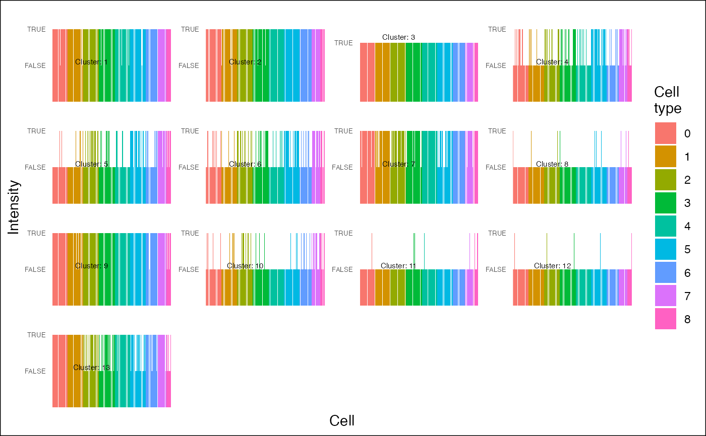

This class is a representation of a partitioning algorithm and is intented to store gene clusters.
A ClusterSet object.
dataA matrix containing the filtered and partitioned data.
gene_clustersA list contains the partitioned genes of the dataset. Each element of the list corresponds to a cluster, and contains the indices of the genes assigned to that cluster.
top_genesA list contains the top genes from the gene clusters. Each element of the list corresponds to a cluster, and contains the indices of the genes assigned to that cluster ranked by their correlation value within their cluster.
gene_clusters_metadataA list contains metadata related to the gene clusters such as the number of gene clusters, their ID, and the number of genes contained in each of them.
gene_cluster_annotationsA list contains the result obtained from the GO enrichment analysis of gene clusters.
cells_metadataA list containing metadata related to the cell clusters such as the clustering results the number of cell clusters, their order, colors associated to each cluster,...
dbf_outputA list containing the intermediates outputs of the DBF function : dknn, simulated distances, critical distance and fdr values.
parametersA list containing the parameter used. Each element of the list correspond to a parameter.
library(Seurat)
#> Loading required package: SeuratObject
#> Loading required package: sp
#> ‘SeuratObject’ was built under R 4.4.0 but the current version is
#> 4.4.1; it is recomended that you reinstall ‘SeuratObject’ as the ABI
#> for R may have changed
#>
#> Attaching package: ‘SeuratObject’
#> The following objects are masked from ‘package:base’:
#>
#> intersect, t
load_example_dataset("7871581/files/pbmc3k_medium")
#> |-- INFO : Dataset 7871581/files/pbmc3k_medium has been loaded.
# Select informative genes
res <- select_genes(pbmc3k_medium)
#> |-- INFO : Computing distances using selected method: pearson
#> |-- INFO : Computing distances to KNN.
#> |-- INFO : Computing simulated distances to KNN.
#> |-- INFO : Computing threshold of distances to KNN (DKNN threshold).
#> |-- INFO : Selecting informative genes.
#> |-- INFO : Creating the ClusterSet object.
# Cluster informative features
res <- gene_clustering(res, inflation=1.6)
#> |-- INFO : Computing distances between selected genes.
#> |-- INFO : Compute distances to KNN between selected genes.
#> |-- INFO : Computing distances to KNN.
#> |-- INFO : Creating the input file for graph partitioning.
#> |-- INFO : Deleting reciprocal edges.
#> |-- INFO : Converting distances into weights.
#> |-- INFO : Writing the input file.
#> |-- INFO : Input file saved in :/var/folders/zy/wl3dj2_n76zfc8sdvny1q06c0000gn/T//RtmpMFoq8X/4qPd5kES06.graph_input.txt
#> |-- INFO : MCL algorithm has been selected.
#> |-- INFO : Number of clusters found: 13
is(res)
#> [1] "ClusterSet"
# Plot heatmap of gene clusters
plot_heatmap(res, row_labels = FALSE, line_size_horizontal = 2)
#> |-- INFO : cell_clusters is not NULL. Setting show_dendro to FALSE
#> |-- INFO : Centering matrix.
#> |-- INFO : Ceiling matrix.
#> |-- INFO : Flooring matrix.
#> |-- INFO : Ordering cells/columns using hierarchical clustering.
#> |-- INFO : Plotting heatmap.
#> |-- INFO : Plot is interactive...
plot_heatmap(res[1,], row_labels = FALSE, line_size_horizontal = 2)
#> |-- INFO : cell_clusters is not NULL. Setting show_dendro to FALSE
#> |-- INFO : Centering matrix.
#> |-- INFO : Ceiling matrix.
#> |-- INFO : Flooring matrix.
#> |-- INFO : Ordering cells/columns using hierarchical clustering.
#> |-- INFO : Plotting heatmap.
#> |-- INFO : Plot is interactive...
plot_heatmap(res[1:2, ], row_labels = FALSE, line_size_horizontal = 2)
#> |-- INFO : cell_clusters is not NULL. Setting show_dendro to FALSE
#> |-- INFO : Centering matrix.
#> |-- INFO : Ceiling matrix.
#> |-- INFO : Flooring matrix.
#> |-- INFO : Ordering cells/columns using hierarchical clustering.
#> |-- INFO : Plotting heatmap.
#> |-- INFO : Plot is interactive...
plot_heatmap(res[1:2, 1:15], row_labels = FALSE, line_size_horizontal = 2)
#> |-- INFO : cell_clusters is not NULL. Setting show_dendro to FALSE
#> |-- INFO : Centering matrix.
#> |-- INFO : Ceiling matrix.
#> |-- INFO : Flooring matrix.
#> |-- INFO : Ordering cells/columns using hierarchical clustering.
#> |-- INFO : Plotting heatmap.
#> |-- INFO : Plot is interactive...
# plot the profiles
idents <- Seurat::Idents(pbmc3k_medium)
plot_profiles(res,
ident = idents)
#> |-- INFO : Number of cells types: 9
#> |-- INFO : Number of cells: 361

# Some methods of the ClusterSet object
x <- ncol(res)
x <- nrow(res)
x <- dim(res)
x <- col_names(res)
x <- row_names(res)
x <- get_genes(res)
x<- clust_size(res)
x <- c("IL32", "CCL5") %in% res
x <- which_clust(res, genes = c("IL32", "CCL5"))
res <- top_genes(res, top=5)
#> |-- INFO : Number of top genes is greater than the number of genes in cluster 13. All genes will be used.
#> |-- INFO : Results are stored in top_genes slot of ClusterSet object.
res <- res[2:3, ]
res <- rename_clust(res)
clust_names(res)
#> [1] "1" "2"
res <- res[, col_names(res)[1:10]]
show(res)
#> An object of class ClusterSet
#> Name: 4qPd5kES06
#> Memory used: 2978248
#> Number of cells: 10
#> Number of informative genes: 74
#> Number of gene clusters: 2
#> This object contains the following informations:
#> - data
#> - gene_clusters
#> - top_genes
#> - gene_clusters_metadata
#> - gene_cluster_annotations
#> - cells_metadata
#> - dbf_output
#> - parameters
#> * distance_method = pearson
#> * k = 80
#> * noise_level = 5e-05
#> * fdr = 0.005
#> * row_sum = 1
#> * no_dknn_filter = FALSE
#> * seed = 123
#> * keep_nn = FALSE
#> * k_graph = 5
#> * output_path = /var/folders/zy/wl3dj2_n76zfc8sdvny1q06c0000gn/T//RtmpMFoq8X
#> * name = 4qPd5kES06
#> * inflation = 1.6
#> * algorithm = mcl
show_methods(res)
#> [1] "%in%" "["
#> [3] "clust_names" "clust_size"
#> [5] "cluster_set_to_xls" "cluster_stats"
#> [7] "col_names" "dim"
#> [9] "enrich_go" "gene_cluster"
#> [11] "grep_clust" "module_quality_scores"
#> [13] "nclust" "plot_clust_enrichments"
#> [15] "plot_ggheatmap" "plot_markers_to_clusters"
#> [17] "rename_clust" "reorder_clust"
#> [19] "reorder_genes" "row_names"
#> [21] "show" "top_by_go"
#> [23] "top_genes" "viz_enrich"
#> [25] "which_clust"